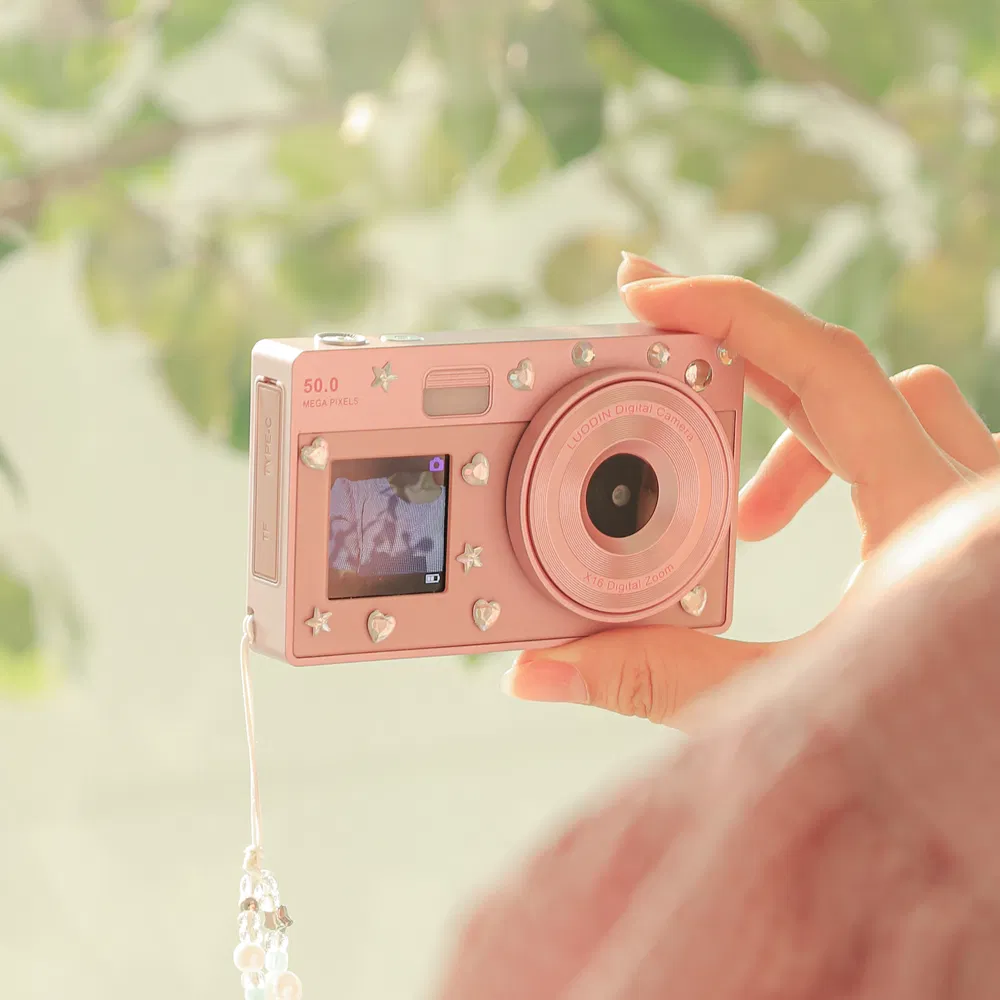

PROJECT 03 / PRODUCT DISCOVERY / CONTENT
트렌드를 발견하고,
구매 이유를 만들다
루어딘 디지털카메라 · VEASLY

01 / PROBLEM
대만 고객이 선택할 상품과 가격 찾기
한국과 대만의 트렌드를 함께 살피며 대만 고객에게 소개할 상품을 발굴했습니다. 아이돌의 디지털카메라 사용과 레트로·Y2K 감성에 주목했습니다.
한국의 유행을 그대로 소개하기보다 대만 고객이 선택할 디자인과 가격을 찾아야 했습니다. 유행을 부담 없이 경험하려는 고객에게 설득력 있는 상품과 메시지가 필요했습니다.
02 / INSIGHT
아이돌과 레트로 감성에서 읽은 수요
아이돌의 디지털카메라 사용과 레트로·Y2K 감성에 대한 관심을 포착했습니다. 겨울·크리스마스 시즌 감성에 맞춰 대만에서도 이 분위기를 즐기려는 수요가 있을 것으로 판단했습니다.
03 / STRATEGY
취향과 가격을 함께 고려한 상품 선정
한국 사이트에서 가격과 디자인을 비교해, 유행을 부담 없이 경험할 수 있는 상품을 발굴했습니다. 대만 고객의 취향과 가격 눈높이에 맞는 구매 이유를 콘텐츠로 소개했습니다.
04 / EXECUTION
발굴부터 소개, 협업 제안까지
트렌드 관찰, 한국 사이트의 가격·디자인 비교, 상품 발굴, 대만 고객용 콘텐츠 제작과 소개를 담당했습니다. 판매 반응을 확인한 뒤 브랜드에 협업을 제안했습니다.
이 경험을 통해 시장에서 발견한 작은 기회를 직접 실행에 옮기고, 브랜드에 협업을 제안해 소비자 반응과 판매 결과로 가능성을 확인하는 것이 중요하다는 점을 배웠습니다.
05 / RESULT
콘텐츠 반응과 주문을 함께 확인
이력서와 기존 포트폴리오는 집계 기간 기준 판매 수량 904대, 카메라 포함 주문 790건을 기록합니다.
904대디지털카메라 판매 수량이력서·기존 포트폴리오 기재 기준 · 포함 주문 790건